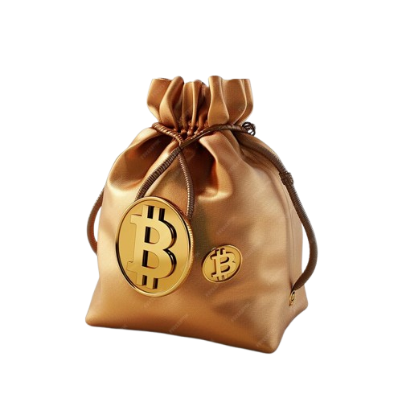
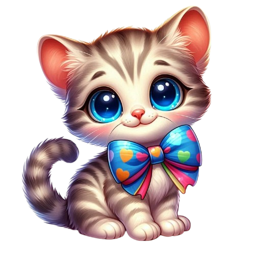

WELCOME TO Baby Kitten
The era of dogs is over! The era of cats has arrived. With the cuttest Meme Token, Baby Kitten will promote the revolution.
CA: 0xB441A16936c7FC3eA28F9E9BE8d4CE0270C9931a
6% Buy/Sell Tax
A 6% fee will be allocated to marketing and development of the project to take the token to 1000x.

Buy Back
We will maintain a buy back system to stabilize the $BabyKitten currency whenever necessary, it will be activated and all repurchased tokens will be burned.
Total Supply
There is a total supply of 1,000,000,000 tokens.
ABOUT
Baby Kitten (BabyKitten) is a memecoin project built on the binance Smart Chain (BEP-20) that aims to create a fun and engaging community centered around memes and cryptocurrencies.
Our mission is to reach new heights by establishing an unbreakable bond between humans and feline friends while exploring the potential of blockchain technology.
This adorable Memecoin is here to create new heights in the world of memes. The token's catchy name around vibrant community fuel its popularity, reflecting the playful spirit of meme culture in the cryptocurrency world.
// OUR WAY TO SPACE ?
OurRoadmap
1
Phase 1
Our journey begins with an exciting project launch on the Binance Smart Chain. We introduce Baby Kitten($BabyKitten) to the world, laying the foundation for a memecoin revolution.
2
Phase 2
During this phase,we focus on fostering a strong and engaging community. We actively connect meme enhhusiasts, host events, and initiate giveaways to build a vibrant Baby Kitten commmunity.
3
Phase 3
We set our sights on global reach. Through strategic partnerships and increased accessibility, we expand the Baby Kitten ecosystem to a wider audience, making memecoin history on a global scale.
Baby Kitten To The Moon!
Baby Kitten in to moon
Join us to revolutionize the future - a place where cats will rule. We will reach new heights, establishing an unbreakable bond between humans and feline friends. Get ready to embark on an extraordinary adventure with Baby Kitten! Forget dogs and frogs, we will make a catastrophic revolutionat full speed straight to the moon!
CA: 0xB441A16936c7FC3eA28F9E9BE8d4CE0270C9931aThe era od dogs is over! The era of cats has arrived. With the cutest Meme Token, Baby Kitten will promote the revolution..